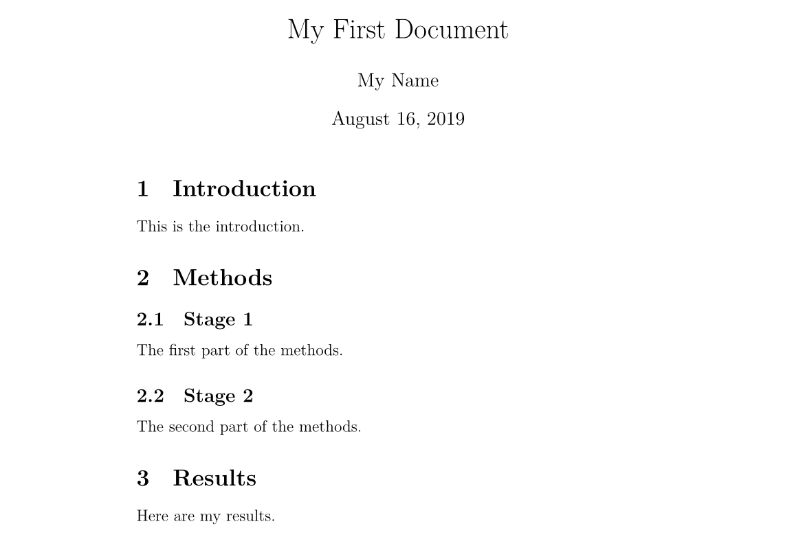
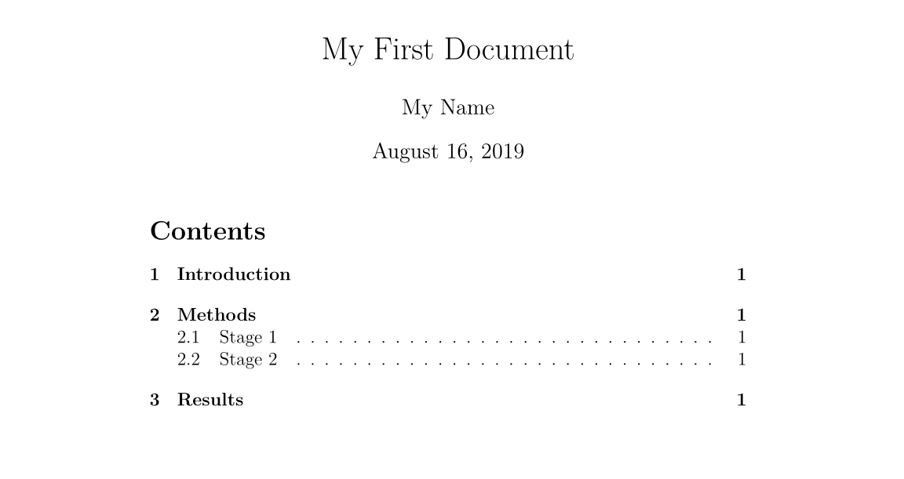
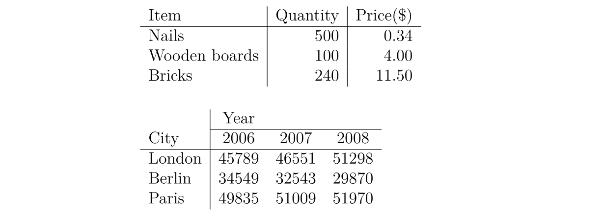
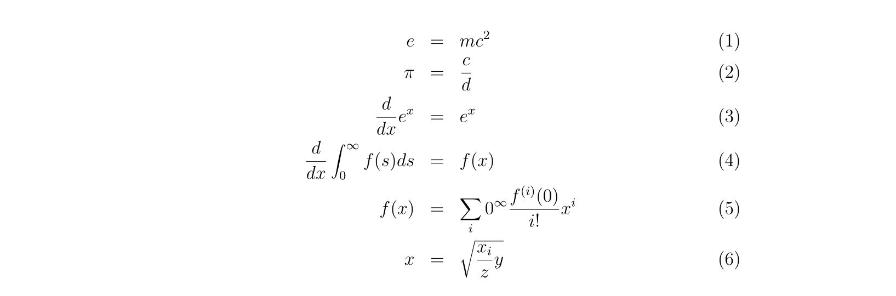

Nhập môn LaTeX
介绍
什么是 LaTeX
LaTeX（读作/ˈlɑːtɛx/或/ˈleɪtɛx/）是一个让你的文档看起来更专业的排版系统，而不是文字处理器．它尤其适合处理篇幅较长、结构严谨的文档，并且十分擅长处理公式表达．它是免费的软件，对大多数操作系统都适用．
LaTeX 基于 TeX（Donald Knuth 在 1978 年为数字化排版设计的排版系统）．TeX 是一种电脑能够处理的低级语言，但大多数人发现它很难使用．LaTeX 正是为了让它变得更加易用而设计的．目前 LaTeX 的版本是 LaTeX 2e．
如果你习惯于使用微软的 Office Word 处理文档，那么你会觉得 LaTeX 的工作方式让你很不习惯．Word 是典型的「所见即所得」的编辑器，你可以在编排文档的时侯查看到最终的排版效果．但使用 LaTeX 时你并不能方便地查看最终效果，这使得你专注于内容而不是外观的调整．
一个 LaTeX 文档是一个以 .tex 结尾的文本文件，可以使用任意的文本编辑器编辑，比如 Notepad，但对于大多数人而言，使用一个合适的 LaTeX 编辑器会使得编辑的过程容易很多．在编辑的过程中你可以标记文档的结构．完成后你可以进行编译——这意味着将它转化为另一种格式的文档．它支持多种格式，但最常用的是 PDF 文档格式．
在开始之前
下面列出在本文中使用到的记号：
- 希望你实施的操作会被打上一个箭头 \(\rightarrow\)；
- 你输入的字符会被装进代码块中；
- 菜单命令与按钮的名称会被标记为 粗体．
一些概念
如果需要编写 LaTeX 文档，你需要安装一个「发行版」，常用的发行版有 TeX Live、MikTeX 和适用于 macOS 用户的 MacTeX（实际上是 TeX Live 的 macOS 版本），至于 CTeX 则现在不推荐使用．TeX Live 和 MacTeX 带有几乎所有的 LaTeX 宏包；而 MikTeX 只带有少量必须的宏包，其他宏包将在需要时安装．
TeX Live 和 MikTeX 都带有 TeXworks 编辑器，你也可以安装功能更多的 TeXstudio 编辑器，或者自行配置 Visual Studio Code 或 Notepad++ 等编辑器．下文所使用的编辑器是运行在 Windows 7 上的 TeXworks．
大部分发行版都带有多个引擎，如 pdfTeX 和 XeTeX．对于中文用户，推荐使用 XeTeX 以获得 Unicode 支持．
TeX 有多种格式，如 Plain TeX 和 LaTeX．现在一般使用 LaTeX 格式．所以，你需要使用与你所使用的格式打包在一起的引擎．如对于 pdfTeX，你需要使用 pdfLaTeX，对于 XeTeX 则是 XeLaTeX．
扩展阅读：TeX 引擎、格式、发行版之介绍．
环境配置
对于 Windows 用户，你需要下载 TeX Live 或 MikTeX．国内用户可以使用 清华大学 TUNA 镜像站，请点击页面右侧的「获取下载链接」按钮，并选择「应用软件」标签下的「TeX 排版系统」即可下载 TeX Live 或 MikTeX 的安装包，其中 TeX Live 的安装包是一个 ISO 文件，需要挂载后以管理员权限执行 install-tl-advanced.bat．
对于 macOS 用户，清华大学 TUNA 镜像站同样提供 MacTeX 和 macOS 版 MikTeX 的下载．
对于 Linux 用户，如果使用 TeX Live，则同样下载 ISO 文件，执行 install-tl 脚本；如果使用 MikTeX，则按照 官方文档 进行安装．
文档结构
基本要素
\(\rightarrow\) 打开 TeXworks．
一个新的文档会被自动打开．
\(\rightarrow\) 进入 Format 菜单，选择 Line Numbers．
行号并不是要素，但它可以帮助你比较代码与屏幕信息，找到错误．
\(\rightarrow\) 进入 Format 菜单，选择 Syntax Coloring，然后选择 LaTeX．
语法色彩会高亮代码，使得代码更加易读．
\(\rightarrow\) 输入以下文字：
1 2 3 4 5 | |
\documentclass 命令必须出现在每个 LaTeX 文档的开头．花括号内的文本指定了文档的类型．article 文档类型适合较短的文章，比如期刊文章和短篇报告．其他文档类型包括 report（适用于更长的多章节的文档，比如博士生论文），proc（会议论文集），book 和 beamer．方括号内的文本指定了一些选项——示例中它设置纸张大小为 A4，主要文字大小为 12pt．
\begin{document} 和 \end{document} 命令将你的文本内容包裹起来．任何在 \begin{document} 之前的文本都被视为前导命令，会影响整个文档．任何在 \end{document} 之后的文本都会被忽视．
空行不是必要的，但它可以让长的文档更易读．
\(\rightarrow\) 按下 Save 按扭；\(\rightarrow\) 在 Libraries>Documents 中新建一个名为 LaTeX course 文件夹；\(\rightarrow\) 将你的文档命名为 Doc1 并将其保存为 TeX document 放在这个文件夹中．
将不同的 LaTeX 文档放在不同的目录下，在编译的时候组合多个文件是一个很好的想法．
\(\rightarrow\) 确保 typeset 菜单设置为了 xeLaTeX．\(\rightarrow\) 点击 Typeset 按扭．
这时你的源文件会被转换为 PDF 文档，这需要花费一定的时间．在编译结束后，TeXworks 的 PDF 查看器会打开并预览生成的文件．PDF 文件会被自动地保存在与 TeX 文档相同的目录下．
处理问题
如果在你的文档中存在错误，TeXworks 无法创建 PDF 文档时，Typeset 按扭会变成一个红叉，并且底部的终端输出会保持展开．这时：
\(\rightarrow\) 点击 Abort typesetting 按扭．\(\rightarrow\) 阅读终端输出的内容，最后一行可能会给出行号表示出现错误的位置．\(\rightarrow\) 找到文档中对应的行并修复错误．\(\rightarrow\) 再次点击 Typeset 按扭尝试编译源文件．
添加文档标题
\maketitle 命令可以给文档创建标题．你需要指定文档的标题．如果没有指定日期，就会使用现在的时间，作者是可选的．
\(\rightarrow\) 在 \begin{document} 和 命令后紧跟着输入以下文本：
1 2 3 4 | |
你的文档现在长成了这样：
1 2 3 4 5 6 7 8 9 10 | |
\(\rightarrow\) 点击 Typeset 按扭，核对生成的 PDF 文档．
要点笔记：
\today是插入当前时间的命令．你也可以输入一个不同的时间，比如\date{November 2013}．- article 文档的正文会紧跟着标题之后在同一页上排版．report 会将标题置为单独的一页．
章节
如果需要的话，你可能想将你的文档分为章（Chatpers）、节（Sections）和小节（Subsections）．下列分节命令适用于 article 类型的文档：
\section{...}\subsection{...}\subsubsection{...}\paragraph{...}\subparagraph{...}
花括号内的文本表示章节的标题．对于 report 和 book 类型的文档我们还支持 \chapter{...} 的命令．
\(\rightarrow\) 将 "A sentence of text." 替换为以下文本：
1 2 3 4 5 6 7 8 9 10 11 12 13 | |
你的文档会变成
1 2 3 4 5 6 7 8 9 10 11 12 13 14 15 16 17 18 19 20 21 22 | |
\(\rightarrow\) 点击 Typeset 按扭，核对 PDF 文档．应该是长这样的：

创建标签
你可以对任意章节命令创建标签，这样他们可以在文档的其他部分被引用．使用 \label{labelname} 对章节创建标签．然后输入 \ref{labelname} 或者 \pageref{labelname} 来引用对应的章节．
\(\rightarrow\) 在 \subsection{Stage 1} 下面另起一行，输入 \label{sec1}．\(\rightarrow\) 在 Results 章节输入 Referring to section \ref{sec1} on page \pageref{sec1}．
你的文档会变成这样：
1 2 3 4 5 6 7 8 9 10 11 12 13 14 15 16 17 18 19 20 21 22 | |
\(\rightarrow\) 编译并检查 PDF 文档（你可能需要连续编译两次）：

生成目录（TOC）
如果你使用分节命令，那么可以容易地生成一个目录．使用 \tableofcontents 在文档中创建目录．通常我们会在标题的后面建立目录．
你可能也想也想更改页码为罗马数字（i,ii,iii）．这会确保文档的正文从第 1 页开始．页码可以使用 \pagenumbering{...} 在阿拉伯数字和罗马数字见切换．
\(\rightarrow\) 在 \maketitle 之后输入以下内容：
1 2 3 4 | |
\newpage 命令会另起一个页面，这样我们就可以看到 \pagenumbering 命令带来的影响了．你的文档的前 14 行长这样：
1 2 3 4 5 6 7 8 9 10 11 12 13 | |
\(\rightarrow\) 编译并核对文档（可能需要多次编译，下文不赘述）．
文档的第一页长这样：

第二页：

文字处理
中文字体支持
阅读本文学习 LaTeX 的人，首要学会的自然是 LaTeX 的中文字体支持．事实上，让 LaTeX 支持中文字体有许多方法．在此我们仅给出最 简洁 的解决方案：使用 CTeX 宏包．只需要在文档的前导命令部分添加：
1 | |
就可以了．在编译文档的时侯使用 xelatex 命令，因为它是支持中文字体的．
字体效果
LaTeX 有多种不同的字体效果，在此列举一部分：
1 2 3 | |
效果如下：

\(\rightarrow\) 在你的文档中添加更多的文本并尝试各种字体效果．
彩色字体
为了让你的文档支持彩色字体，你需要使用包（package）．你可以引用很多包来增强 LaTeX 的排版效果．包引用的命令放置在文档的前导命令的位置（即放在 \begin{document} 命令之前）．使用 \usepackage[options]{package} 来引用包．其中 package 是包的名称，而 options 是指定包的特征的一些参数．
使用 \usepackage{color} 后，我们可以调用常见的颜色：

使用彩色字体的代码为
1 | |
其中 colorname 是你想要的颜色的名字，text 是你的彩色文本内容．注意到示例效果中的黄色与白色是有文字背景色的，这个我们同样可以使用 Color 包中的 \colorbox 命令来达到．用法如下：
1 | |
\(\rightarrow\) 在 \begin{document} 前输入 \usepackage{color}．\(\rightarrow\) 在文档内容中输入 {\color{red}fire}．\(\rightarrow\) 编译并核对 PDF 文档内容．
单词 fire 应该是红色的．
你也可以添加一些参数来调用更多的颜色，甚至自定义你需要的颜色．但这部分超出了本书的内容．如果想要获取更多关于彩色文本的内容请阅读 LaTeX Wikibook 的 Colors 章节．
字体大小
接下来我们列举一些 LaTeX 的字体大小设定命令：
1 2 3 | |
效果如下：

\(\rightarrow\) 尝试为你的文本调整字体大小．
段落缩进
LaTeX 默认每个章节第一段首行顶格，之后的段落首行缩进．如果想要段落顶格，在要顶格的段落前加 \noindent 命令即可．如果希望全局所有段落都顶格，在文档的某一位置使用 \setlength{\parindent}{0pt} 命令，之后的所有段落都会顶格．
列表
LaTeX 支持两种类型的列表：有序列表（enumerate）和无序列表（itemize）．列表中的元素定义为 \item．列表可以有子列表．
\(\rightarrow\) 输入下面的内容来生成一个有序列表套无序列表：
1 2 3 4 5 6 7 8 9 10 11 12 | |
\(\rightarrow\) 编译并核对 PDF 文档．
列表长这样：

可以使用方括号参数来修改无序列表头的标志．例如，\item[-] 会使用一个杠作为标志，你甚至可以使用一个单词，比如 \item[One]．
下面的代码：
1 2 3 4 5 6 7 8 9 10 11 12 | |
生成的效果为

注释和空格
我们使用 % 创建一个单行注释，在这个字符之后的该行上的内容都会被忽略，直到下一行开始．
下面的代码：
1 2 3 | |
生成的结果为
多个连续空格在 LaTeX 中被视为一个空格．多个连续空行被视为一个空行．空行的主要功能是开始一个新的段落．通常来说，LaTeX 忽略空行和其他空白字符，两个反斜杠（\\）可以被用来换行．
\(\rightarrow\) 尝试在你的文档中添加注释和空行．
如果你想要在你的文档中添加空格，你可以使用 \vspace{...} 的命令．这样可以添加竖着的空格，高度可以指定．如 \vspace{12pt} 会产生一个空格，高度等于 12pt 的文字的高度．
特殊字符
下列字符在 LaTeX 中属于特殊字符：
1 | |
为了使用这些字符，我们需要在他们前面添加反斜杠进行转义：
1 | |
注意在使用 ^ 和 ~ 字符的时侯需要在后面紧跟一对闭合的花括号，否则他们就会被解释为字母的上标，就像 \^ e 会变成 \(\mathrm {\hat{e}}\)．上面的代码生成的效果如下：

注意，反斜杠不能通过反斜杠转义（不然就变成了换行了），使用 \textbackslash 命令代替．
\(\rightarrow\) 输入代码来在你的文档中生成下面内容：

询问专家或者查看本页面的 源代码 获取帮助．
表格
表格（tabular）命令用于排版表格．LaTeX 默认表格是没有横向和竖向的分割线的——如果你需要，你得手动设定．LaTeX 会根据内容自动设置表格的宽度．下面的代码可以创一个表格：
1 | |
省略号会由定义表格的列的代码替换：
l表示一个左对齐的列；r表示一个右对齐的列；c表示一个向中对齐的列；|表示一个列的竖线；
例如，{lll} 会生成一个三列的表格，并且保存向左对齐，没有显式的竖线；{|l|l|r|} 会生成一个三列表格，前两列左对齐，最后一列右对齐，并且相邻两列之间有显式的竖线．
表格的数据在 \begin{tabular} 后输入：
&用于分割列；\\用于换行；\hline表示插入一个贯穿所有列的横着的分割线；\cline{1-2}会在第一列和第二列插入一个横着的分割线．
最后使用 \end{tabular} 结束表格．举一些例子：
1 2 3 4 5 6 7 8 9 10 11 12 13 14 15 16 17 18 19 20 21 22 | |
效果如下：

实践
尝试画出下列表格：

图表
本章介绍如何在 LaTeX 文档中插入图表．这里我们需要引入 graphicx 包．图片应当是 PDF，PNG，JPEG 或者 GIF 文件．下面的代码会插入一个名为 myimage 的图片：
1 2 3 4 5 6 | |
[h] 是位置参数，h 表示把图表近似地放置在这里（如果能放得下）．有其他的选项：t 表示放在在页面顶端；b 表示放在在页面的底端；p 表示另起一页放置图表．你也可以添加一个 ! 参数来强制放在参数指定的位置（尽管这样排版的效果可能不太好）．
\centering 将图片放置在页面的中央．如果没有该命令会默认左对齐．使用它的效果是很好的，因为图表的标题也是居中对齐的．
\includegraphics{...} 命令可以自动将图放置到你的文档中，图片文件应当与 TeX 文件放在同一目录下．
[width=1\textwidth] 是一个可选的参数，它指定图片的宽度——与文本的宽度相同．宽度也可以以厘米为单位．你也可以使用 [scale=0.5] 将图片按比例缩小（示例相当于缩小一半）．
\caption{...} 定义了图表的标题．如果使用了它，LaTeX 会给你的图表添加「Figure」开头的序号．你可以使用 \listoffigures 来生成一个图表的目录．
\label{...} 创建了一个可以供你引用的标签．
实践
\(\rightarrow\) 在你文档的前导命令中添加 \usepackage{graphicx}．\(\rightarrow\) 找到一张图片，放置在你的 LaTeX course 文件夹下．\(\rightarrow\) 在你想要添加图片的地方输入以下内容：
1 2 3 4 5 | |
将 ImageFilename 替换为你的文件的名字（不包括后缀）．如果你的文件名有空格，就使用双引号包裹，比如 "screen 20"．
\(\rightarrow\) 编译并核对文件．
公式
使用 LaTeX 的主要原因之一是它可以方便地排版公式．我们使用数学模式来排版公式．
插入公式
你可以使用一对 $ 来启用数学模式，这可以用于撰写行内数学公式．例如 $1+2=3$ 的生成效果是 \(1+2=3\)．
如果你想要行间的公式，可以使用 $$...$$（现在我们推荐使用 \[...\]，因为前者可能产生不良间距）．例如，$$1+2=3$$ 的生产效果为
如果是生成带标号的公式，可以使用 \begin{equation}...\end{equation}．例如：
1 2 3 | |
生成的效果为：

数字 6 代表的是章节的编号，仅当你的文档有设置章节时才会出现，比如 report 类型的文档．
使用 \begin{eqnarray}...\end{eqnarray} 来撰写一组带标号的公式．例如：
1 2 3 4 | |
生成的效果为
要撰写不标号的公式就在环境标志的后面添加 * 字符，如 {equation*}，{eqnarray*}．
Warning
可以发现，使用 eqnarray 时，会出现等号周围的空隙过大之类的问题．
可以使用 amsmath 宏包中的 align 环境：
1 2 3 4 5 6 | |
或在行间公式中使用 aligned 环境．它们的名字后面加上星号后，公式就不带标号了．
详见 更多阅读 中第一篇资料的「4.4 多行公式」．
数学符号
尽管一些基础的符号可以直接键入，但大多数特殊符号需要使用命令来显示．
本书只是数学符号使用的入门教程，LaTeX Wikibook 的数学符号章节是另一个更好更完整的教程．如果想要了解更多关于数学符号的内容请移步．如果你想找到一个特定的符号，可以使用 Detexfiy，它可以识别手写字符．
上标和下标
上标（Powers）使用 ^ 来表示，比如 $n^2$ 生成的效果为 \(n^2\)．
下标（Indices）使用 _ 表示，比如 $2_a$ 生成的效果为 \(2_a\)．
如果上标或下标的内容包含多个字符，请使用花括号包裹起来．比如 $b_{a-2}$ 的效果为 \(b_{a-2}\)．
分数
分数使用 \frac{numerator}{denominator} 命令插入．比如 $$\frac{a}{3}$$ 的生成效果为
分数可以嵌套．比如 $$\frac{y}{\frac{3}{x}+b}$$ 的生成效果为
根号
我们使用 \sqrt{...} 命令插入根号．省略号的内容由被开根的内容替代．如果需要添加开根的次数，使用方括号括起来即可．
例如 $$\sqrt{y^2}$$ 的生成效果为
而 $$\sqrt[x]{y^2}$$ 的生成效果为
求和与积分
使用 \sum 和 \int 来插入求和式与积分式．对于两种符号，上限使用 ^ 来表示，而下限使用 _ 表示．
$$\sum_{x=1}^5 y^z$$ 的生成效果为
而 $$\int_a^b f(x)$$ 的生成效果为
希腊字母
我们可以使用反斜杠加希腊字母的名称来表示一个希腊字母．名称的首字母的大小写决定希腊字母的形态．例如
$\alpha$=\(\alpha\)$\beta$=\(\beta\)$\delta, \Delta$=\(\delta, \Delta\)$\pi, \Pi$=\(\pi, \Pi\)$\sigma, \Sigma$=\(\sigma, \Sigma\)$\phi, \Phi, \varphi$=\(\phi, \Phi, \varphi\)$\psi, \Psi$=\(\psi, \Psi\)$\omega, \Omega$=\(\omega, \Omega\)
实践
\(\rightarrow\) 撰写代码来生成下列公式：

如果需要帮助，可以查看本页面的 源代码．
参考文献
介绍
LaTeX 可以轻松插入参考文献以及目录．本文会介绍如何使用另一个 BibTeX 文件来存储参考文献．
BibTeX 文件类型
BibTeX 文件包含了所有你想要在你文档中引用的文献．它的文件后缀名为 .bib．它的名字应设置为你的 TeX 文档的名字．.bib 文件是文本文件．你需要将你的参考文献按照下列格式输入：
1 2 3 4 5 6 7 8 9 | |
每一个参考文献先声名它的文献类型（reference type）．示例中使用的是 @article，其他的类型包括 @book，@incollection 用于引用一本书的中的章节，@inproceedings 用于引用会议论文．可以 在此 查看更多支持的类型．
接下来的花括号内首先要列出一个引用键值（citation key）．必须保证你引用的文献的引用键值是不同的．你可以自定义键值串，不过使用第一作者名字加上年分会是一个表义清晰的选择．
接下来的若干行包括文献的若干信息，格式如下：
1 | |
你可以使用 LaTeX 命令来生成特殊的文字效果．比如意大利斜体可以使用 \emph{Rattus norvegicus}．
对于需要大写的字母，请用花括号包裹起来．BibTeX 会自动把标题中除第一个字母外所有大写字母替换为小写．比如 Dispersal in the contemporary United States 的生成效果为 \(\text{Dispersal in the contemporary united states}\)，而 Dispersal in the contemporary {U}nited {S}tates 的生成效果为 \(\text{Dispersal in the contemporary United States}\)．
你可以手写 BibTeX 文件，也可以使用软件来生成．
插入文献列表
使用下列命令在文档当前位置插入文献列表：
1 2 | |
参考文献写在 references.bib 里．
参考文献标注
使用 \cite{citationkey} 来在你想要引用文献的地方插入一个标注．如果你不希望在正文中插入一个引用标注，但仍想要在文献列表中显示这次引用，使用 \nocite{citationkey} 命令．
想要在引用中插入页码信息，使用方括号：\cite[p. 215]{citationkay}．
要引用多个文献，使用逗号分隔：\cite{citation01,citation02,citation03}．
引用格式
数字标号引用
LaTeX 包含了多种行内数字标号引用的格式：
Plain 方括号包裹数字的形式，如 \([1]\)．文献列表按照第一作者的字母表顺序排列．每一个作者的名字是全称．
Abbrv 与 plain 是相同的，但作者的名字是缩写．
Unsrt 与 plain 是相同的，但文献列表的排序按照在文中引用的先后顺序排列．
Alpha 与 plain 一样，但引用的标注是作者的名字与年份组合在一起，不是数字，如 \([Kop10]\)．
作者日期引用
如果你想使用作者日期的引用，使用 natbib 包．它使用 \citep{...} 命令来生成一个方括号标注，如 \([Koppe,2010]\)，使用 \citet{...} 来生成一个标注，只把年份放到方括号里，如 \(Koppe [2010]\)．在此 查看它的更多用法．
Natbib 包也有三种格式：plainnat，abbrvnat 和 unsrtnat，他们与 plain，abbrv 和 unsrt 的效果是一样的．
其他引用格式
如果你需要使用不同的格式，你需要在同一个文件夹下创建一个格式文件（.bst 文件），引用这个格式的时侯使用它的文件名调用 \bibliographystyle{...} 命令实现．
实践
\(\rightarrow\) 在同一文件夹下新建一个同名的 BibTeX 文件，用正确的格式输入参考文献的信息．\(\rightarrow\) 切换到 TeX 文档，并使用 \cite，\bibliographystyle 和 \bibliograph 命令来引用文献．\(\rightarrow\) 编译 TeX 文件．\(\rightarrow\) 切换到 BibTeX 文件，并编译（点击 Typeset 按扭）\(\rightarrow\) 切换到 TeX 文件并编译它 两次，然后核对 PDF 文档．
更多阅读
-
一份（不太）简短的 LATEX 2ε 介绍 https://github.com/CTeX-org/lshort-zh-cn/releases/download/v6.02/lshort-zh-cn.pdf 或 112 分钟了解 LaTeX 2ε.
-
LaTeX Project http://www.latex-project.org/ Official website - has links to documentation, information about installing LATEX on your own computer, and information about where to look for help.
-
LaTeX Wikibook http://en.wikibooks.org/wiki/LaTeX/ Comprehensive and clearly written, although still a work in progress. A downloadable PDF is also available.
-
Comparison of TeX Editors on Wikipedia http://en.wikipedia.org/wiki/Comparison_of_TeX_editors Information to help you to choose which L A TEX editor to install on your own computer.
-
TeX Live http://www.tug.org/texlive/"An easy way to get up and running with the TeX document production system". Available for Unix and Windows (links to MacTeX for MacOSX users). Includes the TeXworks editor.
-
Workbook Source Files http://edin.ac/17EQPM1 Download the .tex file and other files needed to compile this workbook.
本文译自 http://www.docs.is.ed.ac.uk/skills/documents/3722/3722-2014.pdf, 依据其他文献略有修改．
Last updated on this page:, Update history
Found an error? Want to help improve? Edit this page on GitHub!
Contributors to this page:OI-wiki
All content on this page is provided under the terms of the CC BY-SA 4.0 and SATA license, additional terms may apply